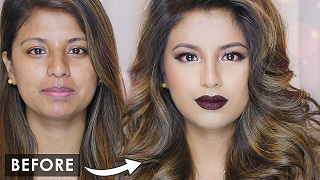

MAKEOVER

Start with these makeover tips :
1.Perfect your skin : When it comes to makeup, keep in mind that "less is more."
"Many women make the mistake of trying to cover up fine lines with layers of makeup;
in effect, this actually makes them look older," notes New York City makeup ace Mel Rau.
Instead, look for a new breed of skin-perfecting products with photo-optic technology,
which brightens, resurfaces and improves your skin's clarity. One favorite: Estee Lauder
Prime FX Color Neutralizing Primer ($25; esteelauder.com).
Choose professional eyebrow shaping : A skilled eyebrow shaping can totally transform
your face. (Prices range from about $30-$60; call your local salon.) "The entire eye area
can appear 'lifted' and more open, helping women look younger and much more polished,"
explains New York City-based celebrity makeup artist Ramy Gafni. Maintenance simply
involves "cleaning up" brows underneath and removing only the strays on top.
Eyebrow coloring: keep the color close to your hair color (one shade darker than your
locks). Since eyebrow coloring at home can easily go wrong (you don't want to take any
chances working that close to your eyes), experiment with makeup pencils and powders.
Women with very dark hair can try brown, while a taupe color works for blondes or most
brunettes, according to Giselle, a colorist at Pierre Michel Salon in New York City,
who suggests lightly feathering it into brows.